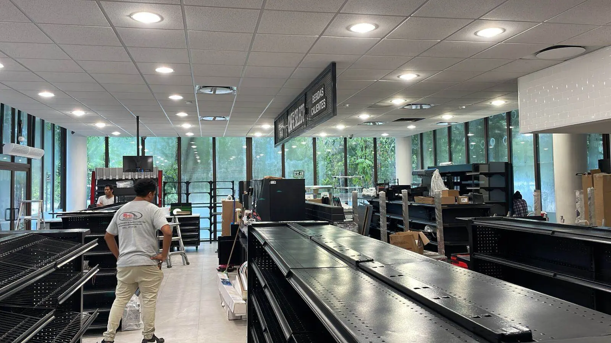

Las cadenas de farmacias y las independientes abren en cada colonia nueva de Cozumel, muchas con consultorio al lado. Construimos y acondicionamos farmacias al estándar de la cadena: anaqueles y mostradores, el consultorio adyacente, resguardo de controlados, red de frío, seguridad, fachada y anuncio — con la distribución que pide la licencia sanitaria, en semanas.

Anaqueles, mostradores, iluminación y cajas al estándar de la cadena.
Consultorio adyacente con baño y acceso independiente.
Resguardo seguro y área de registros según norma.
Refrigeradores y respaldo eléctrico para medicamentos.
Fachada de marca, anuncios luminosos y permisos.
Paquete tipo cotizado una vez para varias tiendas.
Las farmacias se rentan y abren rápido. Trabajamos con el paquete tipo de la cadena, lo adaptamos a cada local y entregamos la mayoría de los acondicionamientos en 3 a 6 semanas.
Almacén, área de controlados y consultorio siguen las reglas sanitarias, para que la licencia y el registro del médico no se retrasen por la distribución.
En Cozumel cada camión de materiales cruza en ferry, así que los costos son alrededor de 22% mayores que en Cancún y el programa debe prever barcazas, clima y refacciones. La demanda viene de segunda vivienda, buzos y rentas de larga estancia.
Las licencias las otorga el municipio de Cozumel; tramitamos uso de suelo, licencia de construcción con DRO y Protección Civil.
| Concepto | Costo |
|---|---|
| Acondicionamiento de farmacia, por m² | $9,000–$16,000 |
| Farmacia de 80–150 m², completa | $1.2M–$2.7M |
| Consultorio adyacente | $0.3M–$0.7M |
| Resguardo de medicamentos controlados y seguridad | $0.2M–$0.5M |
| Fachada y anuncio | $0.2M–$0.7M |
| Farmacia en edificio propio, 250 m² | $5.5M–$9.8M |
En Cozumel: Sucursales bancarias · Cervecerías artesanales · Marinas secas y astilleros · Fábricas de hielo · Construcción comercial
Construcción de farmacias en otras ciudades: Cancún · Playa del Carmen · Chetumal · Puerto Morelos
Relacionado: Sucursales bancarias · Construcción de farmacias · Construcción de moteles
Calculadora de costo comercial · Plazas · Oficinas
Plazas y centros comerciales
Envíe los planos o el terreno; visitamos, revisamos uso de suelo y permisos, y le enviamos un presupuesto por partidas. Respuesta en 2 minutos.
Cotizar por WhatsAppSu opinión ayuda a otros propietarios a decidir, y a nosotros a mejorar.
Escribir una reseñaVer reseñas en Google